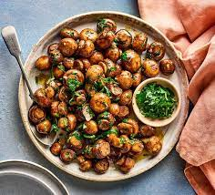

Garlic Mushrooms

Description
A side dish of garlic mushrooms is simple to make. Sauté the sliced mushrooms in heated butter with red wine. You can enjoy this delicious garlic mushrooms as a side to grilled steaks or on top of crusty toasted bread for a tasty appetizer.
Ingredients
-
1 tbsp of butter
-
2 lbs of sliced fresh mushrooms
-
4 cloves of minced garlic
-
1 tbsp of dried basil
-
1 cup of red wine
Steps
-
Heat butter in a skillet over medium heat. Add mushrooms and garlic; cook and stir until mushrooms are a light golden brown and liquid has evaporated, about 10 minutes. Stir in basil.
-
Reduce heat to low, and pour wine into the skillet. Simmer until wine has mostly evaporated. Serve immediately.